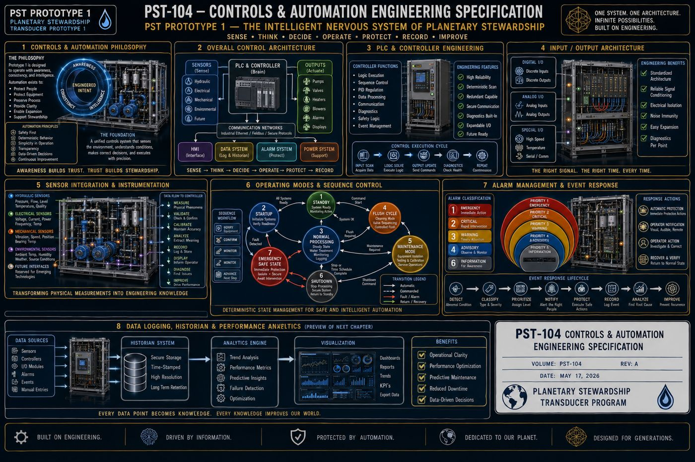
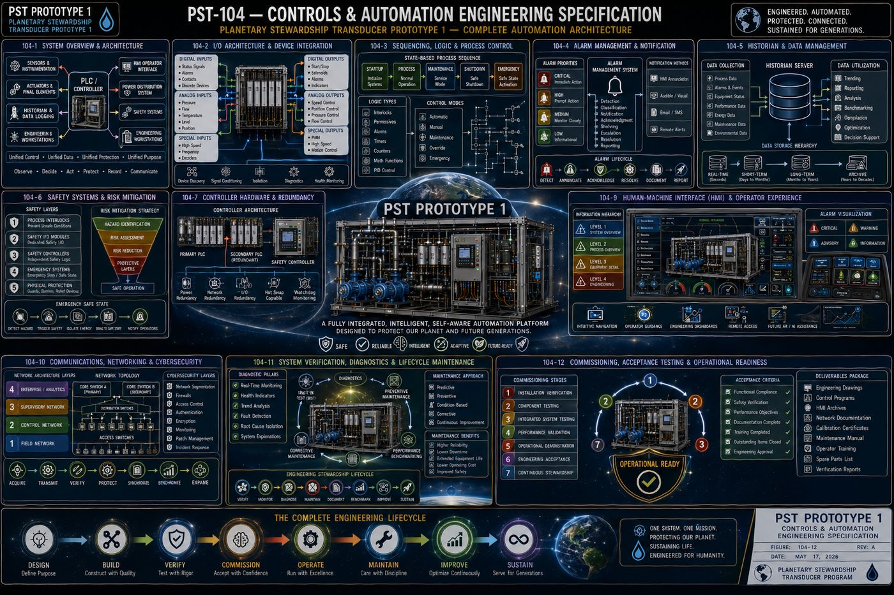

Part of an Eight-Volume Set
This is the fourth of eight detailed volume pages expanding on [[planetary-stewardship-transducer]] (AW-04). PST-104 integrates directly with the mechanical hardware and service access in [[pst-101-mechanical-systems]] (AW-10), the electrical power, wiring, and communications in [[pst-102-electrical-systems]] (AW-11), and the hydraulic equipment, instrumentation, and valves in [[pst-103-hydraulic-systems]] (AW-12), defining the intelligence that coordinates these disciplines into one operational platform.
PST-104 defines the complete controls and automation architecture of Prototype 1: the four-layer control hierarchy and information flow philosophy, the PLC and controller as the platform's central decision-making engine, the input/output architecture connecting the controller to every field device, the sensor integration philosophy that turns physical phenomena into trustworthy engineering data, the six primary operating modes and sequence control logic, the five-tier alarm classification and event response system, the data historian and performance analytics that give the platform a permanent engineering memory, the human-machine interface and operator experience, the layered communications and cybersecurity architecture, the built-in self-test and lifecycle diagnostics program, and the five-stage commissioning and acceptance process that transitions the platform from engineered installation to operational service.
All twelve chapters are covered in full below, following the specification's own structure: purpose, engineering intent, philosophy, architecture, and a chapter summary.
I. Controls and Automation Philosophy, and the Overall Control Architecture
PST-104 integrates the mechanical hardware from PST-101, the electrical infrastructure from PST-102, and the hydraulic systems from PST-103, defining the intelligence that coordinates them into one operational platform. Seven guiding principles govern the design: deterministic operation, human transparency, layered safety, modular logic, fail-safe design, continuous observation, and future expandability. Rather than viewing automation as a collection of independent control devices, Prototype 1 treats the control system as an integrated information architecture supporting safe, repeatable, and observable operation, with information moving through the platform from the physical process through sensors, input processing, controller logic, a decision engine, output commands, actuators, physical response, feedback, the operator interface, and finally into engineering documentation. Every decision the control system makes is intended to be observable, repeatable, and documented.
1.1 Four Functional Layers
| Layer | Role |
|---|---|
| 1 — Field Devices | Physical equipment installed throughout the platform, pressure sensors, flow meters, pump motors, valve actuators, and emergency stop devices, interacting directly with the physical machine |
| 2 — Local Control | Equipment-level control, variable frequency drives, motor starters, relay assemblies, and local I/O modules, translating controller commands into equipment actions |
| 3 — Central Control | Sequence control, operating modes, alarm processing, interlock management, and diagnostic evaluation; the operational brain of Prototype 1 |
| 4 — Human Interface | System overview, alarm display, historical trends, and configuration; the operator should always understand the current state of the platform |
Information is expected to move in one continuous cycle: measure, validate, analyze, decide, command, execute, verify, record, display, and repeat, treating automation as a continuous feedback process rather than a sequence of isolated events. The control system coordinates five domains simultaneously, mechanical, electrical, hydraulic, instrumentation, and safety, each maintaining independent logic while contributing to platform-wide coordination, and the architecture reserves standardized interfaces for future sensors, autonomous operating modes, and predictive maintenance, so expansion can occur without redesigning the core automation architecture.
II. PLC and Controller Engineering
The controller coordinates every major subsystem by processing field information, executing deterministic control logic, issuing commands, monitoring system health, and maintaining continuous operational awareness, functioning as the central decision-making engine of Prototype 1. Prototype 1 remains controller-independent: the specification defines functional behavior rather than a particular manufacturer's hardware, so industrial PLCs, industrial PCs, distributed control systems, or future control architectures may all satisfy the requirement as long as functional behavior is preserved.
The controller continuously performs equipment coordination, synchronizing pumps, valves, instrumentation, and alarms; logic execution, processing engineering sequences according to documented logic; data processing, collecting and timestamping operational information; alarm management; safety monitoring, continuously evaluating protective interlocks; and diagnostic evaluation of equipment health and communication status. It operates through a continuous scan cycle, read inputs, validate signals, execute logic, evaluate safety, update outputs, record data, update operator displays, and repeat, with every scan expected to produce deterministic and repeatable behavior. Control tasks span continuous tasks (pressure and flow monitoring, alarm supervision), event-driven tasks (emergency stop, valve or pump faults, communication loss), and scheduled tasks (maintenance reminders, calibration intervals, diagnostic routines). The controller maintains organized memory, configuration parameters, equipment status, alarm history, and calibration information, and uses a consistent time reference across historical records, alarm chronology, and event reconstruction. Fault tolerance means the controller recognizes abnormal conditions, sensor failure, communication interruption, power interruption, without producing unpredictable behavior, transitioning instead into documented operating states while preserving operator awareness. The controller is expected to evolve over multiple generations of the platform, so the architecture emphasizes hardware independence, modular software, and documented logic, keeping the engineering philosophy consistent even as controller technology advances.
III. Input/Output Architecture
The I/O Architecture is the standardized interface through which the platform exchanges information between the physical world and the central controller, serving as the nervous system connecting the controller to every engineered subsystem. Prototype 1 separates field devices from controller logic entirely: the controller never directly depends on individual wiring arrangements, and every field device communicates through standardized input and output interfaces, allowing field equipment to evolve without requiring redesign of the control software.
Representative input categories include digital inputs (limit switches, float switches, emergency stops, valve position feedback), analog inputs (pressure and flow transmitters, temperature and conductivity sensors), and intelligent inputs (smart transmitters and intelligent motor drives providing expanded diagnostic information). Representative output categories include digital outputs (pump start/stop, alarm horn, solenoid valves), analog outputs (variable frequency drive speed reference, modulating control valves), and intelligent outputs (drive configuration, smart actuator commands). Signal integrity is preserved through shielded instrumentation wiring, grounding philosophy, and cable segregation, and every I/O point receives a unique engineering identifier, device tag, I/O address, and control logic reference, so troubleshooting and documentation stay simple. Prototype 1 encourages modular I/O organization by subsystem, pump module I/O, intake module I/O, manifold module I/O, so each engineering subsystem maintains organized information boundaries, and the architecture continuously monitors communication quality, input and output failure, wiring faults, and device offline status, to support proactive maintenance. Future I/O capacity is reserved for additional sensors, expanded treatment systems, and autonomous equipment, so the communication framework remains stable while field technologies evolve.
IV. Sensor Integration and Instrumentation
Sensors provide the information upon which every automated decision is based, so instrumentation is treated as a primary engineering discipline rather than an accessory to the control system. Prototype 1 does not measure simply because a sensor is available: every sensor must satisfy a clearly defined purpose, process control, equipment protection, safety verification, or engineering documentation, with each measurement contributing directly to operational understanding.
Instrumentation is organized into four functional measurement groups: hydraulic measurements (pressure, flow rate, conductivity, turbidity), electrical measurements (voltage, current, power consumption, ground continuity), mechanical measurements (pump vibration, rotational speed, bearing temperature), and environmental measurements (ambient temperature, humidity, water source conditions). Sensors are placed where measurements best represent actual operating conditions, stable hydraulic flow, minimal turbulence, electrical noise avoidance, since proper placement is as important as sensor accuracy, and every device supports standardized calibration, zero verification, span verification, and reference comparison, establishing confidence in the automation system. The controller continuously evaluates measurement quality through range checking, signal plausibility, rate-of-change analysis, and cross-sensor comparison, distinguishing between abnormal process conditions and faulty instrumentation wherever practical, and instrumentation supports diagnostics beyond process control, pump wear analysis, filter loading, and hydraulic imbalance, contributing to long-term equipment stewardship. Every sensor maintains documented lifecycle information, installation date, calibration history, and performance trends, remaining traceable throughout its operational life, and the architecture reserves standardized interfaces for future sensing technologies, spectroscopic analysis, optical monitoring, and acoustic diagnostics, so measurement capability can evolve without redesigning the control philosophy.
V. Operating Modes and Sequence Control
Rather than viewing operation as a single continuous process, Prototype 1 is designed as a collection of clearly defined operating modes, each with predetermined objectives, control strategies, safety requirements, and transition criteria, so every system behaves predictably regardless of operating condition. Prototype 1 operates through state-based control: at any given time the controller recognizes one primary operating mode, transitions occur only after satisfying predefined engineering conditions, and the controller never permits undefined intermediate states.
| Mode | Function |
|---|---|
| Standby | System energized, equipment available, no active processing; continuous monitoring remains active |
| Startup | Hardware verification, sensor validation, communication confirmation, alarm reset, and safety verification; establishes operational readiness |
| Normal Processing | The primary operating mode: water intake, hydraulic regulation, cartridge management, flow stabilization, process monitoring, and data logging; steady-state operation |
| Flush Cycle | A dedicated cleaning mode: flow rerouting, valve sequencing, controlled flushing, and completion verification, operating independently of production |
| Maintenance Mode | Allows controlled servicing, equipment isolation, manual actuator operation, and calibration; automatic sequences remain inhibited unless specifically authorized |
| Shutdown | Controlled operational termination: stop production, secure hydraulic flow, de-energize equipment, and archive diagnostics; protects equipment integrity |
| Emergency Safe State | The highest priority mode, automatically entered on detection of critical faults: stop rotating equipment, close isolation valves, remove nonessential power, and await operator intervention. Protection always overrides production. |
Every operating mode consists of smaller sequential tasks following a strict pattern, verify prerequisites, issue equipment commands, confirm successful execution, monitor stability, and advance, with no sequence advancing without confirmation of the previous step. Transitions require explicit conditions, equipment readiness, sensor validation, flow confirmation, and operator authorization, never assumptions, and authorized personnel may assume manual control under controlled conditions that clearly indicate active overrides, record operator actions, and preserve safety interlocks. Prototype 1 supports intelligent recovery from noncritical interruptions, resuming interrupted sequences and validating measurements before continuing, and the controller continuously supervises active sequences, current step, expected completion, and timeout detection, so operators always understand exactly where the system is within any operational sequence. Every mode transition is permanently recorded, time stamp, previous and new mode, trigger condition, and active alarms, supporting diagnostics and continuous improvement, and the sequence engine supports future operating modes, autonomous optimization, remote operation, and multi-unit coordination, without requiring redesign.
VI. Alarm Management and Event Response
An alarm system is not merely a collection of warnings; it is an engineering decision-support system designed to identify abnormal conditions, communicate their significance, protect equipment, and guide timely corrective action, with every alarm existing for a clearly defined operational purpose. Prototype 1 distinguishes information, advisory notifications, warnings, critical alarms, and emergency shutdown events, since not every abnormal condition requires immediate intervention.
| Classification | Priority | Representative Examples |
|---|---|---|
| Informational Events | 5 | Startup completed, flush cycle complete, calibration successful; improve operational awareness |
| Advisory Notifications | 4 | Slight flow reduction, elevated filter loading, minor communication delay; operators informed while normal operation continues |
| Warning Alarms | 3 | Rising differential pressure, abnormal vibration, sensor disagreement; encourage corrective action before protective shutdown becomes necessary |
| Critical Alarms | 2 | Hydraulic overpressure, pump failure, electrical protection trip; automatic protective responses may begin immediately |
| Emergency Events | 1 | Catastrophic equipment failure, fire detection, manual emergency stop; protection overrides production without exception |
Alarm information is presented for immediate understanding, color coding, plain-language descriptions, time stamp, and recommended response, so operators never need to interpret cryptic fault codes. Certain conditions trigger deterministic and fully documented automatic protective actions, equipment shutdown, valve isolation, and safe-state transition, while operators remain an essential component through acknowledgment, investigation, and manual recovery. Prototype 1 minimizes unnecessary alarm generation through startup and maintenance suppression, time delays, and deadband filtering, and every alarm and event is permanently recorded, supporting engineering analysis. Historical alarm data supports long-term optimization, frequency analysis, response times, and failure trends, becoming an engineering resource rather than merely an operational log, and the architecture is prepared for future predictive alarms and AI-assisted diagnostics.
VII. Data Logging, Historian, and Performance Analytics
Every operational event, measurement, and maintenance activity contributes to the engineering understanding of the platform, and the historian transforms these observations into a permanent operational memory supporting diagnostics, optimization, and future design improvements. The historian is not a simple database; it is the permanent engineering memory of Prototype 1, capturing the complete operational story rather than only failures, since normal operation establishes the baseline against which future deviations are measured.
The historian records process data (flow, pressure, temperature, water quality), equipment data (pump status, motor loading, vibration), control system data (operating mode, sequence step, controller health), alarm and event data, and maintenance data (calibration history, component replacement), using recording strategies matched to engineering value, continuous trending, event-based logging, or high-speed diagnostic capture. Data integrity is preserved through time synchronization, secure storage, and backup verification, since engineering decisions are only as reliable as the data supporting them, and visualization tools, trend graphs, process dashboards, and equipment timelines, transform raw measurements into engineering insight. Performance analytics reveal equipment efficiency, energy consumption, and reliability trends that may not be visible during daily operation, and predictive indicators, increasing vibration, rising differential pressure, pump efficiency degradation, turn historical trends into engineering forecasts. The historian automatically supports standardized daily, weekly, and monthly reporting, and preserves information across active operational, short-term analysis, and long-term archival lifecycle phases, so the platform preserves knowledge rather than repeatedly rediscovering it. The architecture supports future AI-assisted optimization, fleet-wide benchmarking, and digital twin integration, growing more valuable as the platform evolves.
VIII. Human-Machine Interface and Operator Experience
The HMI is the primary point of communication between the operator and the automation system, transforming complex engineering data into clear, intuitive information supporting safe operation and rapid decision-making. Prototype 1 presents information according to operational importance rather than engineering complexity: critical information is always immediately visible, additional detail becomes available progressively, and the interface guides rather than overwhelms the operator.
| Level | Content |
|---|---|
| 1 — System Overview | Operating mode, system status, active alarms, and emergency conditions; immediate understanding of overall platform health |
| 2 — Process Overview | Hydraulic flow, pressures, temperatures, valve positions, and treatment stages; the complete process flow |
| 3 — Equipment Detail | Pump diagnostics, motor performance, sensor values, and maintenance history for individual equipment |
| 4 — Engineering Diagnostics | Historical trends, alarm history, sequence execution, and PLC and communication diagnostics; advanced engineering analysis |
Navigation stays consistent throughout the platform, minimal menu depth, consistent screen layout, and rapid access to critical information, so operators never become lost within the interface, and all displays follow standardized graphical conventions, consistent color usage and standard engineering symbols, improving recognition and reducing training requirements. Alarm presentation integrates seamlessly into every display, color-coded priorities, flashing active alarms, and navigation directly to affected equipment, and operator controls, start, stop, mode selection, and manual override, require appropriate confirmation before execution. Specialized engineering dashboards, hydraulic performance, alarm analytics, and maintenance planning, transform operational data into engineering insight, and authorized personnel may securely access the HMI remotely for monitoring, historical analysis, and report generation, always preserving cybersecurity and complete audit logging. The interface actively assists operators through recommended corrective actions, maintenance reminders, and troubleshooting workflows, serving as an engineering assistant rather than simply an information display, and the architecture is prepared for future AI-assisted operators, voice interaction, and augmented reality maintenance.
IX. Communications, Networking, and Cybersecurity
Every measurement, command, alarm, and operator interaction depends on secure and deterministic data exchange, so the communications architecture is designed as a critical engineering system rather than a supporting utility. Prototype 1 treats every subsystem as part of a coordinated information ecosystem: rather than isolated components exchanging occasional messages, every device continuously contributes to a shared operational understanding of the platform.
The network organizes into four layers: the field layer, direct interface with sensors, transmitters, and actuators; the control layer, responsible for deterministic automation through the PLC and remote I/O; the supervisory layer, providing operational oversight through the HMI, historian, and alarm management; and the enterprise layer, supporting organizational integration through reporting and asset management. Prototype 1 uses a modular industrial network architecture, segmented network zones, redundant paths where appropriate, and managed switching, remaining understandable as it grows, and communication integrity is continuously evaluated through message verification, error detection, and device health monitoring rather than assumed. Cybersecurity emphasizes defense through layered engineering practices, least-privilege access, authentication, network segmentation, and continuous monitoring, integrated into the architecture from the beginning, with every interaction occurring under authenticated user credentials across access levels from operator through system administrator. Prototype 1 supports secure remote engineering functions, remote diagnostics, historian access, and alarm notification, that never compromise operational safety or cybersecurity, and the network continuously evaluates its own health, device connectivity, communication latency, and packet integrity, diagnosing itself before failures affect operations. The architecture is prepared for future AI engineering assistants, cloud-based analytics, and digital twin synchronization, without sacrificing stability.
X. System Verification, Diagnostics, and Lifecycle Maintenance
Prototype 1 is designed to remain verifiable, maintainable, and continuously observable throughout its entire engineering lifecycle, with every subsystem supporting systematic testing, fault isolation, and preventive maintenance without compromising operational safety. Verification is not considered a final project phase; it is a permanent engineering discipline, occurring through factory acceptance testing, installation verification, commissioning, operational validation, and periodic engineering audits.
Prototype 1 continuously evaluates its own operational health, equipment status monitoring, sensor validation, communication integrity, and controller diagnostics, so the machine explains its condition before requiring external troubleshooting. The controller performs automatic Built-In Self-Test routines during startup and normal operation, PLC health verification, I/O integrity, memory validation, and watchdog verification, increasing operational confidence before production begins. Preventive maintenance is scheduled according to operating history rather than fixed assumptions wherever practical, sensor calibration, pump inspection, valve exercise, and network verification, preserving performance rather than merely restoring failures, and when abnormal conditions occur, the platform supports rapid fault isolation through guided diagnostics, alarm history, and trend analysis, minimizing downtime while preserving engineering traceability. Engineering documentation, control narratives, I/O lists, calibration certificates, and maintenance history, remains synchronized with the physical system, and the platform continuously compares current performance against established engineering baselines, hydraulic efficiency, electrical consumption, and alarm frequency, transforming operational history into measurable engineering progress. Operational experience, maintenance observations, alarm analysis, and reliability studies, contributes directly to future engineering refinement, and the architecture accommodates future AI-assisted diagnostics, autonomous verification routines, and predictive lifecycle modeling.
XI. Commissioning, Acceptance Testing, and Operational Readiness
Commissioning confirms that every subsystem performs according to its intended engineering design, that all integrated functions operate together as a coordinated platform, and that personnel possess the knowledge necessary to safely steward the system, representing the beginning of responsible operation rather than the conclusion of construction. Prototype 1 is commissioned through a structured sequence of progressively integrated testing activities: no subsystem is accepted based solely on individual performance, since system integration is the ultimate measure of engineering success.
| Stage | Focus |
|---|---|
| 1 — Installation Verification | Mechanical, electrical, and hydraulic inspection confirming equipment was installed according to engineering documentation |
| 2 — Component Testing | Each subsystem demonstrates independent functionality: pump operation, valve actuation, sensor calibration, PLC and HMI verification |
| 3 — Integrated System Testing | All subsystems operate together: startup sequence, normal processing, flush cycle, alarm response, and Emergency Safe State |
| 4 — Performance Validation | Operational performance compared against engineering design objectives: hydraulic performance, control stability, communication reliability |
| 5 — Operational Demonstration | Operators perform representative scenarios, normal startup, alarm acknowledgment, controlled shutdown, and emergency procedures; operational readiness includes human readiness |
Formal acceptance requires successful completion of documented criteria, functional compliance, safety verification, documentation completeness, and completed training, made objective, documented, and repeatable. Operator knowledge is treated as an engineered asset, with training covering system overview, alarm management, and emergency response, and the completed platform includes comprehensive operational records, engineering drawings, control narratives, calibration certificates, and maintenance manuals, becoming the permanent engineering reference. Commissioning establishes the initial engineering benchmark, flow capacity, pump efficiency, and alarm frequency, against which every future improvement is measured, and concludes with the beginning of continuous stewardship, routine verification, preventive maintenance, and performance benchmarking, as the platform continues evolving after commissioning. Every future upgrade, equipment additions, software revisions, AI integration, follows the same disciplined commissioning methodology.


Protected — Detailed Engineering Package
Exact control logic and program listings, alarm setpoints and deadband values, PLC scan-time targets, network protocol selections and IP schemes, cybersecurity configuration details, and the bill of materials for controller and I/O hardware are held under NDA pending requirements freeze and physics validation, consistent with the source specification's own stated pre-construction status.
Full Specification Available Under Signed NDA ↗Documentation Summary
The four-layer control architecture, the PLC and controller philosophy, the I/O architecture, the sensor integration framework, the seven-mode operating and sequence control architecture, the five-tier alarm classification system, the data historian architecture, the four-level HMI information hierarchy, the four-layer communications and cybersecurity architecture, the Built-In Self-Test and lifecycle diagnostics program, and the five-stage commissioning process are original work product of Joshua Farrior, developed under CHRISTOS™ Energy, Technology & Harmonic Design Consulting, LLC.
Held under NDA pending further development: exact control logic and PLC program listings; alarm setpoints, deadbands, and time-delay values; network topology diagrams, protocol selections, and IP addressing schemes; cybersecurity configuration and access control details; the complete engineering drawing package; the bill of materials for controller and I/O hardware; and commissioning test procedures beyond the stages described above.
© 2026 Joshua Farrior · Christos™ Energy, Technology & Harmonic Design Consulting, LLC · All Rights Reserved · Business ID: 202511071941923 · Christos™ trademark registered on the USPTO Principal Register · christosenergy.com